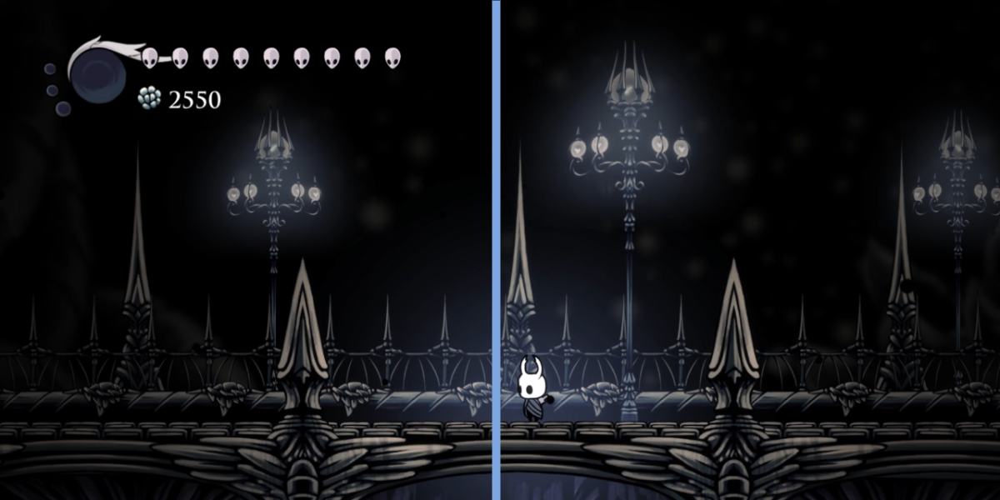
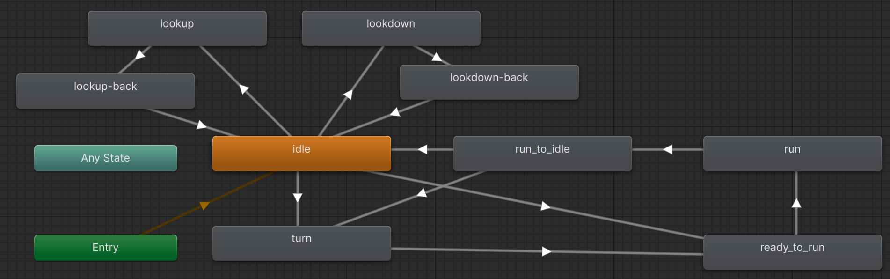
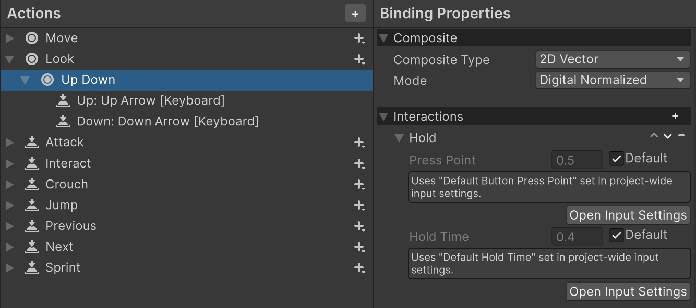

空洞騎士重現 - 運鏡
今天的課題是運鏡，人們常說眼睛是靈魂之窗，而在遊戲中鏡頭扮演了同樣的角色，雖然在空洞騎士這種類銀河惡魔城遊戲中，鏡頭是跟角色的移動有關，而角色又是由玩家操作，但玩家並沒有辦法完全控制鏡頭，有時反而是鏡頭的變化來引導玩家，而這個細節在空洞騎士中可謂發揚光大，現在就來學習空洞騎士中最基本的運鏡吧。
重現場景
這次要重現的場景跟上一篇一樣是宮殿廣場，我們可以直接沿用搭好場景，但由於這次鏡頭會移動，所以得考慮到 parallex scrolling，要了解這個現象可以仔細看影片中背景燈柱與前面橋墩的尖刺，會發現隨著鏡頭移動，兩者間的距離會改變甚至重疊，這點符合現實世界中的遠景動得比較慢。
這算是使用 perspective camera 的好處，但沒有設定好適當的 z 軸深度，當鏡頭動起來後就會發現某些東西移動不太同步，這通常是因為我們把東西放太遠然後直接把尺寸放大彌補，靜止時看不出來，但一動起來就很突兀。遇到時再調整就好，至於本次要重現的運鏡，包含兩種: 水平移動、仰望與俯視。
Camera Controller
在介紹要怎樣控制鏡頭前，我強烈推薦可以去看這個介紹影片，內容不僅介紹了 unity 的運鏡系統 (Cinemachine) 而且還是以空洞騎士為主題，真的太合適了XD，不過由於目前我們的場景還算是半開放式，還用不到那麼強大的功能，因此本篇會先用土法煉鋼的方式來處理運鏡!!!
首先從目標影片開頭會發現在角色移動之前，鏡頭就已經展現了影響力，當角色面向左邊或右邊時鏡頭會稍微偏移，以下圖為例會發現當面朝左邊時其實畫面正中央是落在小騎士左側，這讓畫面的左側透漏更多資訊，就彷彿玩家真的向左邊眺望，反之面朝右會讓右側佔有更多空間。

為了辦到這點，先替 camera 新增一個 script，內容如下，先新增一個 Player 物件變數，然後從 Inspect 上將 Player 物件拖進來，讓我們能夠直接讀取到 Player 座標以及狀態，此外在 Player class 中加上一個 public 變數 IsFacingRight 來方便判定角色面向哪邊，另外可以注意採用這邊採用的是 LateUpdate，這個函數是在
Update 呼叫完後才會執行，也就是確保 Camera 位置的更新是在 Player 任何行動之後:
[SerializeField] Player player;
[SerializeField] float SmoothTrans = 5f;
[SerializeField] float BiasX = 0.75f;
[SerializeField] float BiasY = 1f;
void LateUpdate()
{
Vector3 camPos = transform.position;
if ( player.IsFacingRight ) // face to right
{
camPos.x = player.transform.position.x + BiasX;
}
else // face to left
{
camPos.x = player.transform.position.x - BiasX;
}
camPos.y = player.transform.position.y + BiasY;
transform.position = Vector3.Lerp(
transform.position,
camPos,
SmoothTrans * Time.deltaTime
);
}
Bias 在 x 軸就根據面向哪邊來調整，至於 y 軸就預設偏高，因為小騎士很矮XD，此外這裡使用 Vector3.Lerp 來線性內插，此函數的功能等於 V = A + (B − A) × t，讓鏡頭的座標慢慢朝預設的位置移動，避免瞬間跳過去造成畫面斷裂感，可以調整 SmoothTrans 來感覺一下效果。
同時可以講一下空洞騎士運鏡的另一特點，就是當小騎士在移動時，它的位置會落在畫面正中央，象徵他已經追上鏡頭了，同時這會讓移動的動畫更加清楚，要達成這點其實稍微調整一下 SmoothTrans 即可達成。
重直視角控制
我蠻喜歡的一個細節是當按下上下時，小騎士會有對應的動作，然後過一會鏡頭會移動!!! 讓玩家感覺角色的視野是同步的，要辦到這點可以結合上次學到的 Input System 跟 Animation State Machine，先擴增 animator 的狀態，新增 lookdown、lookup 分別會用到社群提供的 013.LookDown、 014.LookUp sprites。
至於 lookup-back、lookdown-back 則是反向播放的動畫，為了是當玩家放開上下鍵時，讓小騎士把頭轉為原位，至於要如何反向播放可以參考:
- Speed - 預設通常是 1，修改成負數就會反向播放，設定成 -2 是希望能快點把頭轉回來，我覺得這是 team cherry 設計巧思，當玩家要檢視上下環境時，通常是為了謹慎行事，所以會比較有耐心等動畫播完，但確認完後，就會立刻行動，這時候慢慢等動畫就有點惱人。
- Cycle Offset - 0~1 的浮點數，這是控制動畫要從哪一幀播放，因為是要反著播，所以設 1 -> 最後一幀。
為了讓 Player 能接收到向上與向下看的動作，這邊設定了新的 Action - Look，清除掉本來無關的 Binding 並新增 "Up Down" 加上 Interaction - Hold，這是為了透過 hold time 來創造出時間差，讓小騎士先做出動作，過一會才讓鏡頭移動，之後就是新增鍵盤偵測 up、down。
hold 設定參數的 press point 用於輸入要按壓到甚麼程度才算觸發，對於搖桿等輸入裝置比較有意義，hold time 則是觸發多久才會執行。

輸入設定好了之後就針對 Player script 撰寫相關的 event handler，started 是當 press 發生後立刻觸發，而 performed 則是 hold time 過了才觸發，然後兩者會對不同的變數賦值，lookInput 可以用在 Update:
// Player.cs
void Awake()
{
...
controls.Player.Look.started += ctx => lookInput = ctx.ReadValue<Vector2>();
controls.Player.Look.performed += ctx => ViewInput = ctx.ReadValue<Vector2>();
controls.Player.Look.canceled += ctx => { lookInput = Vector2.zero; ViewInput = Vector2.zero; };
}
void Update()
{
...
if ( lookInput.y > 0 )
{
anime.SetBool("lookup", true);
}
else if ( lookInput.y < 0 )
{
anime.SetBool("lookdown", true);
}
else
{
anime.SetBool( "lookup", false);
anime.SetBool( "lookdown", false);
}
...
}
lookInput 的數值可以用來更新 animator 的參數 - lookup, lookdown，這些參數就可以用來設定甚麼時候從 IDLE 狀態切到 LOOKUP / LOOkDOWN 以及切回，至於 ViewInput public 變數則是用來設定 Camera 的 Y 軸偏移，且只會在 hold time 之後才會更新數值:
// CameraPositionController.cs
void LateUpdate()
{
...
float delta = 0f;
if ( player.ViewInput.y > 0 )
{
delta = ViewUpY; // 3
}
else if ( player.ViewInput.y < 0 )
{
delta = -ViewDownY; // 5
}
camPos.y = player.transform.position.y + BiasY + delta;
...
}
成品
這是最終成品，成功完成了水平方向的運鏡並加上仰望與俯視的視角，開發到這個地步後就會注意到一些程式上的 BUG，像是影片中快速左右切換再奔跑，有一小段時間小騎士是直接水平滑行，推測是前面的動畫還沒播完，就直接開始移位了，看起來還有很多地方要注意呢!! 順邊說一些其他需要注意的地方:
- 清晰的動畫 - 空洞騎士中，即使小騎士在奔跑中，他本身的動作依舊是清晰的，不過在本次重現過程，會感覺當鏡頭移動時，角色動畫也變得模糊，可以試著降低動畫速度來改善。
- Frame rate - 如果測試過程有發現鏡頭移動時，畫面會出現短暫水平分割線，這通常是因為 GPU 更新畫面速度比螢幕還要快導致的，可以檢查右上角的 Stats 看看 frame rate (FPS) 是不是超過螢幕上限，如果超過的話可以點選左上角的畫質設定，把 VSync 打開，這樣會確保畫面更新得等到螢幕顯示完成，另外也可以在任意物件中進行底下強制設定 FPS / VSync:
void Awake() { QualitySettings.vSyncCount = 60; Application.targetFrameRate = 1; }
總結
恭喜完成了水平向的小騎士控制了ヽ(●´∀`●)ﾉ，接下來要朝進階課題 - 垂直運動邁進，也就是空洞騎士中最重要的跳躍，包含短跳、長跳、二段跳、落下，以及垂直軸的場景構圖等等。